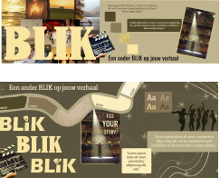

Portofolio
About
This project is to showcase the work I've done throughout the semester like my technical skills, such as web development, brand design and multimedia content creation. It's used to document the projects I've worked on like Branding theater Blik, Media Campaign for Monk, Project X and allows me to track my progress over time.
Design Choices
I started creating this idea I had envisioned on Figma. I made different designs, one more journal looking and another one with a magazine style which I thought gave an elegant touch to the project.
I used a picture showing me from the front angle (cover page) and the same one from a back angle (end page) to mark the front and back of the diary. I specifically chose the same picture with different angles to symbolize the journey and progression throughout the different projects, beginning with the front-face image that introduces me and my work and concluding with the back-face image.

Feedback
I was told the idea of making my portfolio like a magazine and adding the animation to flip the pages was really cool, although navigation would be interesting to see what i would come up with. At first i was planning on creating an index page but soon realized it was not ideal as the user would have to scroll through all the pages and cannot easily access a specific section.
Design Tools
I used tools like Affinity Design, Figma and Pinterest to create my portfolio. Pinterest to help me gather my ideas which I later envisioned in AD and created a prototype in Figma.
Reflection
Creating a portfolio was essential for my learning. It helped me show my skills, reflect on my progress along the semester, and understand how to present my work in a professional, creative way. It taught me how to organize information in an effective way and a key step in understanding the importance of storytelling and visual presentation in my career.
Branding - Blik
About
We were assigned to re-brand Theater Blik, four women aiming to expand their little improv group in Amersfoort into an association of actors and musicians. Our mission was to create a brand identity for the Blik group that fits their goals and personality. Additionally, provide useful tips on how to update different social media platforms to promote their work around The Netherlands.

Moodboard
I gathered images from Pinterest and created a mood-board to conceptualize the overall vibe of the brand. I combined images, text and symbols for this.
Stylescape
Before getting feedback from the client, i created a stylescape to give them a better concept of more concrete ideas by visualizing possible logos, typography & color palette.
Feedback
I was told the idea of making my portfolio like a magazine and adding the animation to flip the pages was really cool, although navigation would be interesting to see what i would come up with. At first i was planning on creating an index page but soon realized it was not ideal as the user would have to scroll through all the pages and cannot easily access a specific section.
Documentation
I made a document including the Team Charter, Project Plan stating the different tasks we had to have done by the end of the week. This step was crucial for the project as it kept us organized and it helped us as a group be held accountable for meetings, individual tasks and responsabilities.
Website Mock-up
Presentation
Halfway through the project, we had in person contact with our clients and I created a presentation of our progress so far and what we were planning on working on in the following 2 weeks.
Visuals
I thought our designing for BLIK needed a little pop of color, and created squiggly lines that would add some playfulness. The lines are undefined and have no specific path but connect when its needed, just like the people that compose Blik.
Content Strategy
I created a simple social media post for our clients to start visualizing the format in which we would later deliver the products
Presentation
Adeline and me presented our groups final deliverables and the rest of the group joined later for a round of questions/feedback from the client.
Reflection
Although my design wasn't the final one we presented to the Blik representatives I still played a role in creating the final deliverables. Because the Blik ladies wanted a playful style for their brand I came up with the squiggly lines that represent an abstract path, because Blik is an improvisation theater group, the audience (and even the actors themselves) never know where they´re heading. The squiggly lines are undefined and do not cross but eventually connect when its needed, just like people.

Layout Exercise
About
Considering the layout principles we created a 2 page magazine. There were certain requirements from a fictional client that limited our creativity when organizing the content.

Design
Considering layout principles arrange content (text, images, headings) in a visually appealing and functional way, reflecting current design standards in media.
Reflection
I learned the importance of taking your time into planning as each member of the group started cutting shapes with no sense of direction and ended up wasting time and materials. After I made a rough draft of the content I cut out the shapes and we were able to create the magazine.
Fiddle Exercise
About
We were given a basic HTML structure and had to design it so that it looks like a real newspaper.
Feedback
Pay attention when im writing as several times ive gotten stuck a long time on silly spelling mistakes/structure and waste time trying to fix it.

Documentation
I opened a couple existing newspaper sites to see the overall structure and get some inspiration . I commented on my code explaining functions and layouts to make my work understandable to others (and to my future self).
Reflection
I feel this was a must-do exercise as it refreshed my memory after a long summer as it allowed me to re-gain certain knowledge like shortcuts to save time. I now realize how helpful commenting on code is for easier editing later on. This specific task was very beneficial to my portfolio project as it really made me practice with grid layout.
Media Campaign - Monk
About
We had to create a media campaign for Monkshop and place them as leading experts in bouldering. Before creating visuals for our Campaign I created a research proposal to help us figure out how to approach the marketing of Monkshop.
Design 1
"It’s not you, It’s our gear" is a slogan i came up with to emphasize that Monkshop takes responsibility for providing top-quality gear. I wanted to imply that if their climb isn’t going well, it’s the fault of their equipment and not their abilities.We presented our ideas to the clients and they mentioned it came off as dismissive rather than encouraging. So I changed the tone of the next iterations.
Design 2
The message changes to "Our expertise, Your climb," shifting focus from taking responsibility for the gear to a more collaborative relationship between Monkshop and the climber. I made "Your" bold to empower the climber and make it about them. I changed the monk logo to yellow as its associated with feelings of optimism, energy, and confidence and to create a more cohesive and relaxing feel when looking at the image.
Design 3
Clients didn't enjoy the first designs so I used the same tagline but emphasizing “Your” in a colorful and playful way to simulate the colored rocks when practicing bouldering inside. Monk aims to have positive encouragement with its customers so the over-sized, colorful letters in "Your" immediately draw attention to the message that Monk’s products and expertise are focused on empowering the climber's personal journey (in bouldering and outside). Some people may not relate the letters with the holds, which come in different shapes, sizes, and colors to create routes with various difficulty levels and styles for climbers and that´s the reason I specifically chose this image for the background of the poster.

paper 7 back
paper 7 front
LO1: Interactive media products
You orient in the relevant tech, media and design landscape and create interactive media products that you have tested with users and stakeholders.
LO2: Development & Version Control
You explore front-end development languages, you write code and document in a version control environment.
LO3: Iterative Design
You explore and use professional design tools and you iteratively design visual works.
LO4: Professional Standard
You apply professional practice, both individually and in teams, in the areas of project organisation, communication with stakeholders, exploratory research, and reporting.
LO5: Personal Leadership
You take the initiative in asking for, and reflecting on, feedback. You identify your own core values as the basis for your study career and professional development.